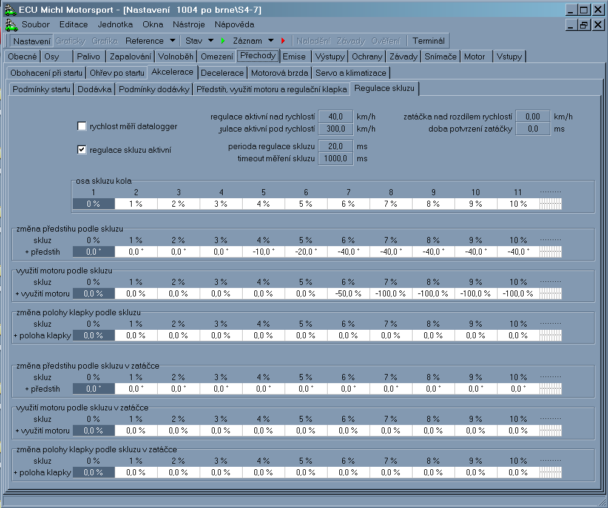

elektronika
Řídící jednotka používá 32bitový procesor PowerPC. Pro paměť programu a kalibrací je k dispozici celkem 1MB paměti, která je součástí čipu procesoru. Pro záznam přechodných dějů a změny nastavení při ladění během chodu motoru je osazena paměť RAM 512KB. Pro záznam závad a událostí je určena paměť EEPROM s kapacitou od 32KB do 256KB. Záznamy používají pro určení časového okamžiku interní hodiny reálného času. Tyto hodiny jsou také využívány pro omezení doby chodu jednotky. Časování veškerých výstupů se provádí s rozlišením a přesností 1ms.

Výstupy jsou řešeny jako obecné s programovým připojením konkrétního výstupu ke zvolené funkci.
Jednotka je vybavena:
• 2 kompletními můstkovými výstupy s proudovou zatížitelností 3A
• 12 rychlými spínači na 0V s proudovou zatížitelností 2A primárně určené na vstřikovače.
• 8 univerzálními spínači na 0V s proudovou zatížitelností 1A
• 8 univerzálními spínači na 0V s proudovou zatížitelností 0,5A
Jednotka je schopna ovládat až 12 vstřikovačů peak&hold. V případě saturovaných vstřikovačů je tento počet až 16. Zapalovaní řídí až 8 externích výkonových budičů. Na přání lze doosadit další dva budiče pro použití na 10 válcových motorech.
Jednotka je osazena 40 analogovými vstupy. Opět je možné přiřadit konkrétní vstupy k požadované funkci programově. Některé vstupy mají kromě toho speciální HW výbavu:
• 8 vstupů se používá jako impulsní vstupy pro snímání polohy kliky a vačky. Zbývající impulsní vstupy je možné využít pro snímače rychlosti kol vozidla a následně i výpočet prokluzu kol.
Programově se přepíná režim indukční/Hallův snímač.
• 2 vstupy jsou určeny pro snímače s nízkým odporem čidla
• 2 vstupy mají rozhraní pro UEGO lambda sondu.
• 2 vstupy jsou optimalizovány pro snímače klepání
• 26 vstupů je možné osadit pullupovými odpory pro odporové snímače.
Komunikace s vnějšími zařízeními se provádí po dvou sériových linkách a po dvou sběrnicích CAN.
Jednotka používá shodnou filosofii nastavení, jako předchůdce ECUMM4, její schopnosti byly ale rozšířeny mimo již výše uvedené také o následující funkce:
* možnost řízení motorů s přímým vstřikováním FSI, TSI za použití externího vysokonapěťového budiče (až 6 válců)
* plynulá regulace tlaku paliva se zpětnou vazbou
* měření rychlosti až 6 kol a možnost kontroly prokluzu hnaných kol
* nezávislé spínání ochran motoru a jiných vnějších spotřebičů (ventilátory, čerpadla)
* dva nezávislé vstupy pro řízení přerušení při řazení (páka, automat)
* dvě nezávislé plynulé regulace časování vačkových hřídelů se zpětnou vazbou
* vysílání datových zpráv s informacemi o stavu motoru a jednotky po CAN busu, kompatibilní s dipleji AIM
* možnost příjmu datových zpráv o rychlostech kol z ABS
* ovládání elektronické škrtící klapky elektronickým pedálem


Máte dotazy? Napište nám na info@michl-motorsport.cz nebo zavolejte +420 5 41 42 43 44